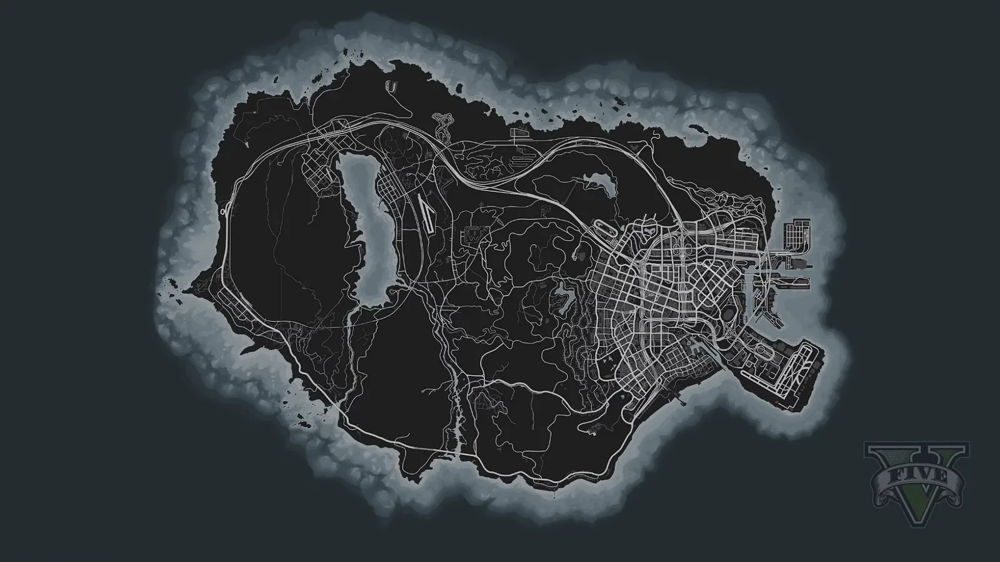

بازگشت به ونیسسیتی؛ شمارش معکوس شروع شد
تا روز عرضه چقدر مانده، با واحدهای مختلف
از اولین تریلر تا روز عرضه
اگر راکستار دوباره تاریخ را عوض کند، باید عدد این صفحه بهروز شود.
بخشهایی که بعد از انتشار اطلاعات رسمی اضافه میشوند.
دو نفر، یک شهر، و دنیایی که از اول علیهشان چیده شده.
GTA 6 در ایالت خیالی لئونیدا اتفاق میافتد؛ نسخهی راکستار از فلوریدا. قلب نقشه ونیسسیتی است، شهری پر از ساحل، کلوپ و نئون که طرفدارها از GTA قدیمی میشناسند، این بار در دنیای مدرن.
قهرمانهای بازی جیسون دووال و لوسیا کامینوس هستند. در تریلر دوم میبینیم جیسون روزهای عادیاش را میگذراند و بعد لوسیا را از زندان لئونیدا بیرون میآورد. از اینجا شروع میشود یک رابطهی عاشقانه و جنایی، شبیه بانی و کلاید.
راکستار قبل از عرضه جزئیات داستان را زیاد باز نکرده؛ اینکه گیمپلی دقیقاً چطور باشد و ماموریتها چه شکلی باشند، هنوز بیشتر حدس و گمان است.
دو قهرمان اصلی و آدمهایی که دور آنها میچرخند.
لوسیا در تریلر دوم از زندان لئونیدا آزاد میشود. طبق توضیح رسمی، بهخاطر کاری که برای محافظت از خانوادهاش کرده زندان رفته. اولین قهرمان زن اصلی GTA در سالهای اخیر است.
جیسون زندگی ساده میخواهد، ولی دردسر دنبالش است. تریلر او را در کار برای برایان نشان میدهد، قبل از اینکه لوسیا را از زندان بیاورد.
چیزهایی که رسماً مشخص است.
بازیای که راه را برای GTA 6 باز کرد.
سه نفر، سه زندگی، یک شهر.
مایکل سالها پیش با پروندهی ساختگی مرگش وارد برنامهی حفاظت از شاهدان شد و حالا با همسر و دو فرزندش در راکفورد هیلز زندگی میکند. زندگی آرامش او را کسل کرده است.
فرانکلین برای یک نمایندگی ماشین «ریپو» میکند و از زندگی در محلهاش خسته است. دوستش لامار دیویس و سگش چاپ همراهش هستند.
ترور از سندیشورز در بلینکانتی کار خودش را اداره میکند. او باور دارد مایکل سالها پیش مرده و ماجرا از وقتی عوض میشود که حقیقت را میفهمد.
روی نقطهها یا ماموریتها بزن تا روی نقشه پیدا شوند.
این یک طرح ساده و تقریبی است، نه نقشهی دقیق. برای نقشهی واقعی به صفحهی «نقشه» برو.
این لیست فقط ماموریتهای اصلی و هایستهای شناختهشده را دارد، نه کل ۶۹ ماموریت. مکانها تقریبیاند.
گزیدهای از ماشین، موتور، هواپیما و قایقهای معروف بازی. بیشتر آنها از روی وسیلههای واقعی الهام گرفته شدهاند.
توضیحات کوتاه و کلیاند؛ آمار دقیق عملکرد را عمداً ننوشتم.
با موس یا انگشت روی نقشه حرکت کن تا کج شود. روی نقطهها بزن.

مکان نقطهها تقریبی است. روی هر جای نقشه کلیک کنی مختصاتش نمایش داده میشود؛ اگر اسم مکان را با مختصاتش برایم بفرستی، نقطهاش را اضافه میکنم.
شش منطقهی اصلی؛ روی نقشه یا دکمهها بزن.
چینش مناطق تقریبی و حدسی است؛ راکستار هنوز نقشهی رسمی را منتشر نکرده.
تریلرهای رسمی GTA 6 از کانال یوتیوب راکستار. برای پخش روی دکمه بزن.
اگر ویدیویی اینجا بارگذاری نشد، از لینک یوتیوب استفاده کن.
یک لوپ سینتویو که مستقیم داخل مرورگرت ساخته میشود، یا آهنگ خودت را پخش کن.
این آهنگ یک لوپ اورجینال است، نه آهنگی از خود بازی. فایل خودت فقط روی دستگاه خودت میماند.